Featured Project
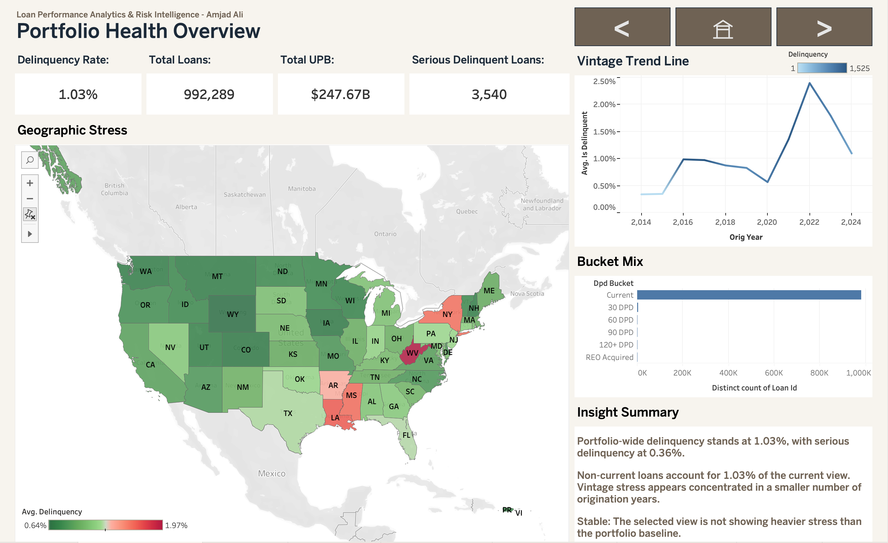
Loan Performance Analytics & Risk Intelligence
End to end analytics platform built on 992K Freddie Mac loans ($248B portfolio) spanning 11 origination years. SQL powered analytical engine with automated data quality checks, interactive Tableau dashboards, ML based risk scoring, and auto generated executive reports.
ML Risk Model: Results Explorer
Dual model approach: OriginRisk (origination predictor, honest AUC) + SegmentIQ (behavioral segmentation, risk ranking)
For complete methodology and architecture details, see the Technical Documentation.
| Credit Band | LTV | Rate | Vintage | Loans | Risk Score | Actual DLQ |
|---|
The dataset is a single monthly snapshot, not a time series. True forward prediction requires sequential monthly data. The origination model predicts current delinquency status from borrower profile, which is valuable for risk stratification but not a deployment ready forecasting tool.
Only about 1% of loans are delinquent. Precision is inherently low. Addressed with balanced class weights and evaluated using lift metrics rather than raw precision.
Monthly time series data, additional features (employment, payment amounts, forbearance history), gradient boosting ensembles, and a calibration layer for dollar loss estimation.
The first attempt produced AUC = 1.0 due to data leakage. The redesign separates OriginRisk (origination, AUC ~0.77) for honest prediction from SegmentIQ (behavioral) for segmentation. This distinction is what mortgage analytics teams value.
Other Projects
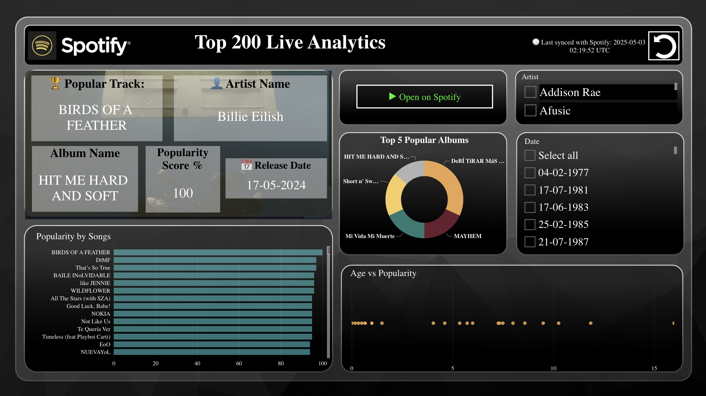
Spotify Live Top 200 Dashboard
Power BI data intelligence platform with historical and real time analytics engine built with API pipelines and Power BI modeling.
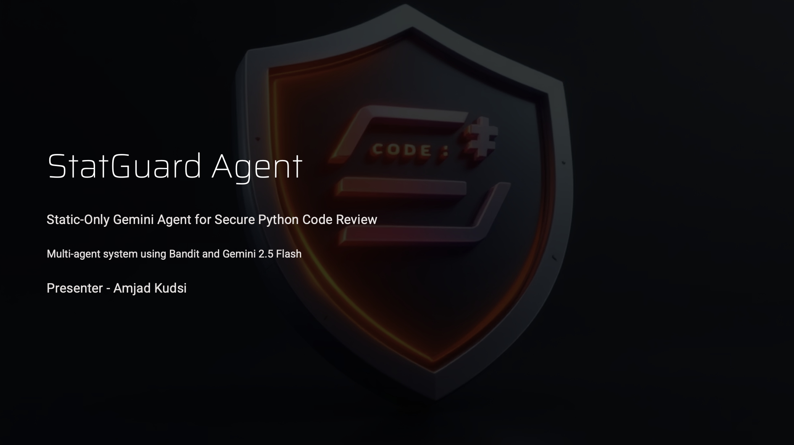
StatGuard: Security Patch Assistant
Can a static only LLM based agent safely assist with secure code review without ever executing the target program?
Tic Tac Tourney
Game logic with Random, Minimax, and Heuristic AI agents competing against humans in a round robin tournament.
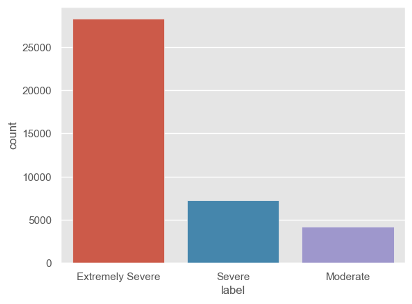
Psychometric Severity Prediction
Understanding how personality traits and demographics influence mental health outcomes using ML classification.
Deepseek SpringAI
Querying DeepSeek and working with Spring AI to build a robust Spring Boot app that delivers interactive, personalized learning experiences.
Career & Education
Credentials & Badges

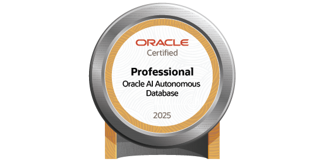


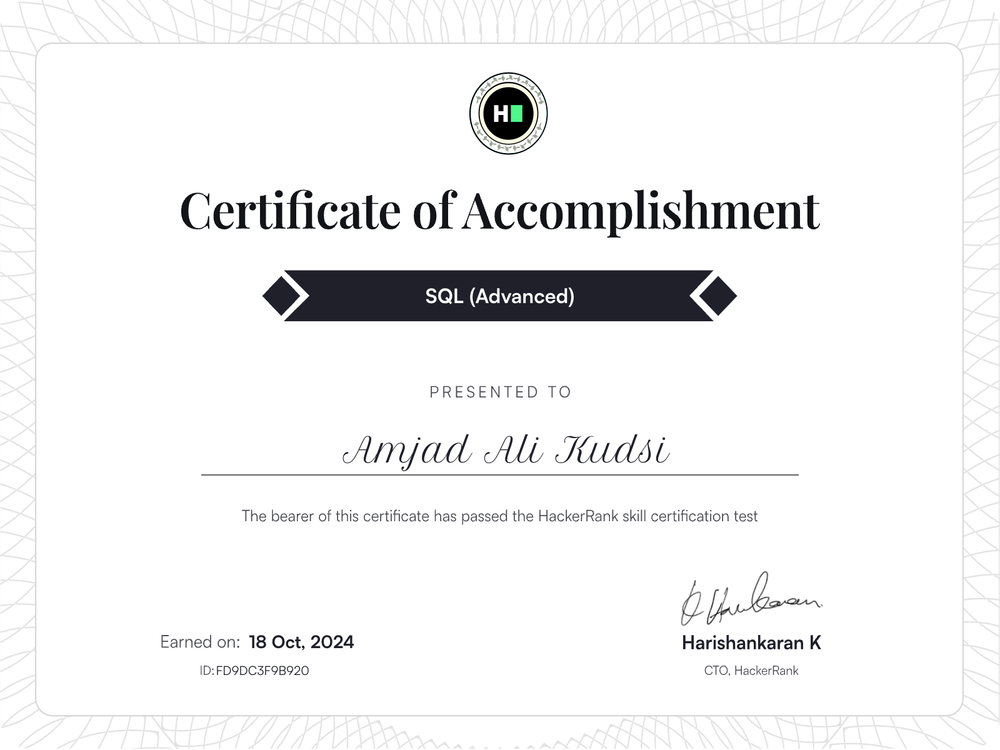
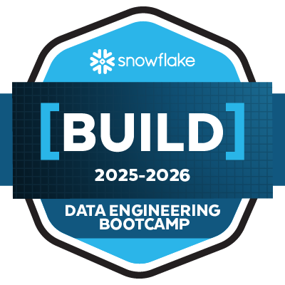
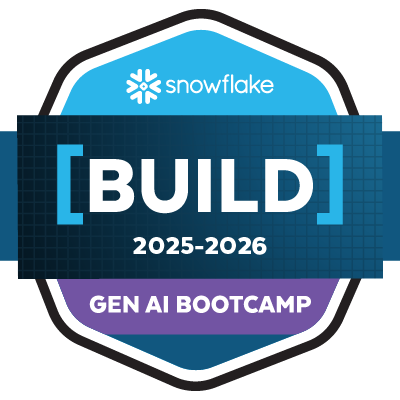
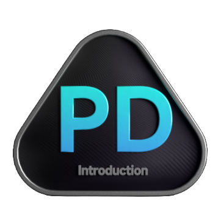
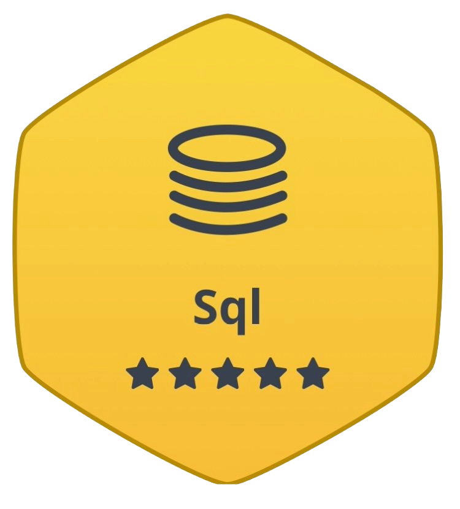
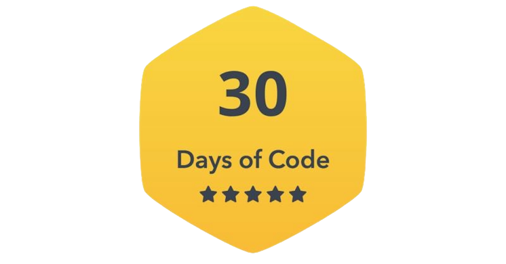
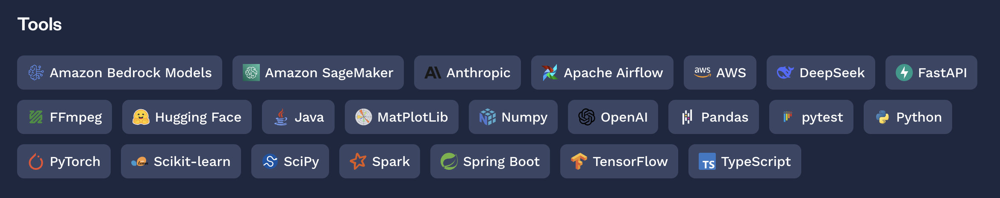